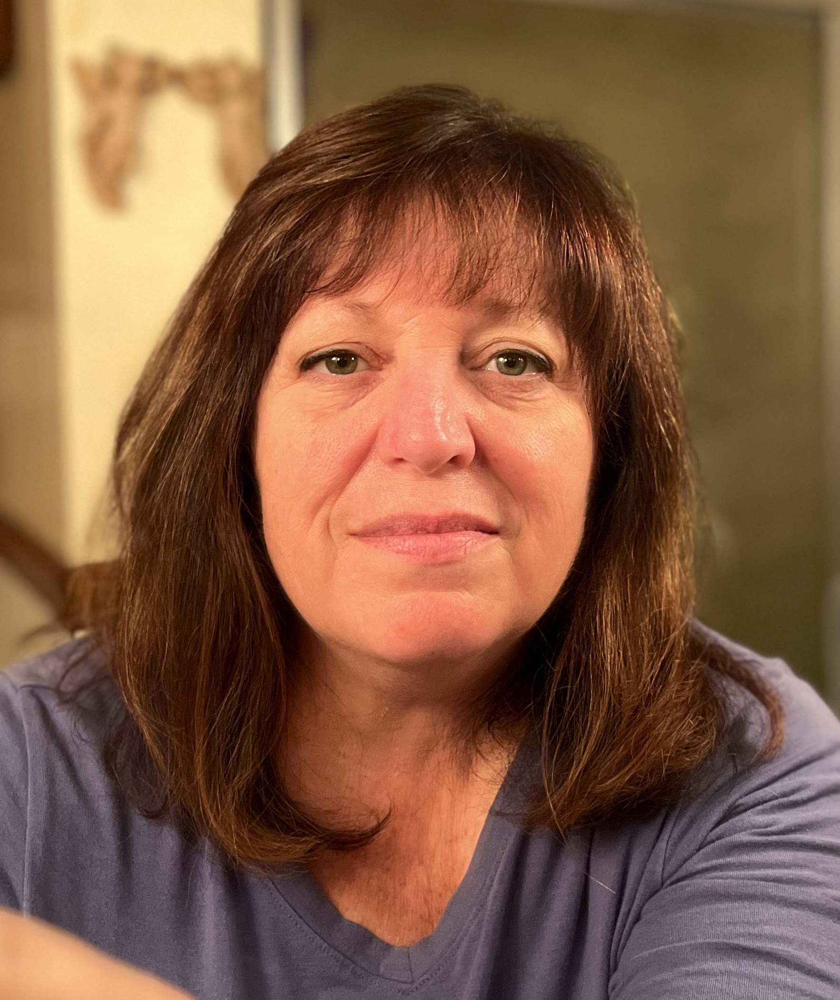

<!DOCTYPE html>
<html lang="en"></html>
<head>
    <meta charset="UTF-80">
    <title>My Resume</title>
</head>
<body>
    <h3>Angela Woodworth</h3>
       
    <h6><b>DOD Clearnace: Top Secret,SCI (Adjudicated 20 March 2021) Poly 10 Jul 2017</b></h6>
    <hr>
    <h4><b>Information Systems Specialist</b></h4>
    <h5>Computer Technician*Network Technician*Network Analyst</h5>
    <hr>
      <p>Accomplished Information Systems Specialist with comprehensive experience in multi-site communications
        systems and IT networks.  In depth expertise in the implementation, analysis, optimization, troubleshooting
        and documentation of Enterpise Systems.  Track record for diagnosing eomplex problems and consistently
        delivering effective solutions.
      </p>
      <h5>QUALIFICATION HIGHLIGHTS</h5>
         <ul>
            <li>Desktop/Server Admin/Customer Support</li>
            <li>Asset Mangement/Systems Auditing</li>
            <li>IT Systems Configuration and Administration</li>
            <li>Security Policy Management</li>
         </ul>
    <hr>
    <h4><b>TECHNICAL EXPERTISE</b></h4>
    <hr>
    <p><b>Operating Systems:</b> DOS, Win 95,Win NT, Windows XP, WIndows Vista, Windows 7, Windows 10, Microsoft 
        Server 2003, Microsoft Server 2008, Microsoft Server 2012 R2<br>
        <br>
        <b>Hardware:</b> Desktops, laptops, printers, servers, communications equipment, testing equiment, routers, switches,
        audio-video equipment, polygraph equipment and peripherals<br>
        <br>
        <b>Software:</b> Exchange 202, Active Directory, Microsoft Office 2003, Microsoft Office 2007, 
        Microsoft Office 2010, Microsoft office 2016, Microsoft Office 365<br>
        <br>
        <b>Military Systems:</b> NIPR/SIPR/JWICS networks, Tandberg Video Teleconference (VTC) suite, Tandberg 
        Desktop VTC, TACLANE KG-175
    </p>
    <hr>
    <h4><b>PROFESSIONAL EXPERIENCE</b></h4>
    <hr>
    <h4><b>Deloitte LLC  July 2021-June  2023</b></h4>
    <h4>Manager Consultant(Full Time), Fort Jackson, SC</h4>
    <hr>
         <ul>
            <li>Site Lead for the contract, provide technical input and solutions. Liason for the DOD customer and contract project manager.</li>
            <li>Provided enterprise IT desktop support related to the operations of computer networks, desktop hardware and software; including troubleshooting.</li>
            <li>Provided technical support and advice concerning ;user laptops, thin clients and servers during transition from DoDiis domain to the DCSA domain. Discussions and planning began prior to COVID and was completed approximately 18 months after DOD made decision to reassgin National Certer for Creditibility Assessment. </li>
            <li>Provided high-level customer care, training, and technical support.  Resolved customer computer issues locally and remotely.</li>
                     
            <li>Completed warranty repairs for computers: troubleshot systems, ordered parts, and completed repairs.</li>
            <li>Consulted with vendors’ technical support on difficult problems.</li>
            <li>Provided Tier 2 helpdesk support for Eastern region and other regions when technician was not available for user's site.  Traveled to other site locations to include Georgia and North Carolina.  </li>
                  
         </ul>
    <hr>
    <h4><b>CSRA/General Dynamics Information Technology				 October 2016-June 2021 </b></h4>
    <h4>Systems Technician IV (Full Time), National Center for Credibility Assessment, Ft. Jackson, SC</h4>
    <hr>
        <ul>
            <li>Site Lead for the contract, provide technical input and solutions for the DOD customer and provide requests to contract project manager.</li>
            <li>Provided enterprise IT desktop support related to the operations of computer networks, desktops, hardware and software; including troubleshooting.  Provide continued technical assistance during transition of servers to new servers to include tape backup server and NAS installation on site. Update server patches as required on servers that have not been decommissioned.</li>
            <li>Provided high-level customer care, training, and technical support.  Resolve computer issues locally and remotely. Travel to sites in South Carolina and North Carolina for desk side support. </li>
            <li>Specially trained in the support of 3 polygraph software applications and 3 types of polygraph devices, thermal printers and peripherals unique to the polygraph school requirements. Research and recommend technical solutions for hardware requirements for software.   </li>
            <li>Completed warranty repairs for computers: troubleshoot, order parts, and complete repairs. </li>
            <li>Consulted with vendors’ technical support on product issues.</li>
            <li>Monitored operations on information technology equipment and systems. Responsible for all software, hardware and polygraph equipment for 38 training labs, 4 classrooms and staff members.</li>
            <li>Maintained and updated customer intranet and public webpage for the polygraph school. </li>
        </ul>
    <hr>
    
     <h4><b>British Aerospace Engineering Systems Intelligence & Security		         May 2011-September 2016</b></h4>
     <h4>Network Analyst (Full Time),  Ft. Jackson, SC</h4>
    <hr>
       <ul>
           <li>Site Lead for the contract, provide technical input and solutions for the DOD customer and provide requests to contract project manager.</li>
           <li>Provided enterprise IT desktop support related to the operations of computer networks, desktop hardware and software; including troubleshooting.  Provided technical assistance during transition from NCCA domain to the dodiis domain on workstations and servers.</li>
           <li>Provided high-level customer care, training, and technical support.  Resolve customer computer issues locally and remotely. Travel to distant site in South Carolina and North Carolina for technical support. </li>
           <li>Specially trained in the support of 3 polygraph software applications and 3 types of polygraph devices, thermal printers and peripherals unique to the polygraph school requirements.  Research and recommend technical solutions. Recommended technical refresh of 115 workstations in support of polygraph software application requirements.  </li>
           <li>Created software baseline images for the various available window computer platforms.</li>
           <li>Completed warranty repairs for computers: troubleshot, ordered replacemnet parts, and completed repairs. </li>
           <li>Consulted with vendors’ technical support on difficult problems.</li>
           <li>Responsible for system administration for 30 servers prior to transition to DoDiis domain. </li>
           <li>Administered and maintained Cisco switches.  Implemented port security for 250 computers and laptops.  Customized settings allowing user to use laptops in multiple locations in the building while maintaining security.  Performed monthly backups and security violation reports.</li>
           <li>Monitored operations on information technology equipment and systems. Responsible for all software, hardware, Audio/Visual devices in four classrooms, 38 training labs, and one Tandberg VTC Suite and two Desktop VTCs, 300 computers, 20 printers/copiers, and 38 servers.</li>
           <li>Developed and implemented Standard Operating Procedures (SOP) related to network hardware and software acquisition, use, support, security, and backup/restore.</li>
           <li>Managed IT personnel, timecards, performed evaluations and other management functions. </li>
       </ul>
    <hr>
    <h4><b>General Dynamics Information Technology				December 2002 – May 2011</b></h4>
        <h4>Technical Support Specialist/Sr. Network Technician (Full Time), AFCENT/A2, Shaw AFB, SC</h4>
    <hr>
        <ul>
            <li>Provided technical support and troubleshooting to network, desktop, and/or systems hardware and software. Performed Ghost image and re-image of hard drives for use on the domain.   </li>
            <li>Oversaw the operation and ongoing technical refresh of 750 computers, 25 printers, and 3 networks of both unclassified and classified networks.</li>
            <li>Deployed in support of Operation Iraqi Freedom as the Joint Worldwide Intelligence Communications System (JWICS) link for all Army and Air Force personal stations at Kirkuk Regional Air Base, Balad Air Base, Ali Air Base. </li>
            <li>Installed, operated, and managed telecommunications software and hardware.</li>
            <li>Deployed, setup and configured Containerized - Joint Worldwide Intelligence Communications System (C-JWICS) in support of Dubai Airshow 2008. </li>
            <li>Site System Administrator, Network Administrator and Help Desk technician for a Windows 2003 and Windows XP environment, including a file server and exchange server while in a tactical environment.  </li>
            
        </ul>
    <hr>
    <h4><b>United States Air Force Oct 1994 – Sept 2002</b></h4>
    <h4>Computer Operator/ Missile Systems Analyst Specialist</h4>
    <hr>
        <ul>
            <li>Performed Emissions Security assessments of all systems which processed classified national security information base wide and provided countermeasures. </li>
            <li>Non-Commissioned Officer in Charge of Message Center. Completed Phase II of Defense Messaging Systems to include installation, training and utilization on the base.  </li>
            <li>Non-Commissioned Officer in Charge of Message Center and Base Information Transfer System (BITS).  Managed distribution of base wide correspondence and processing of registered mail. Volunteered at Post office during manning shortage and heavy mail workloads.</li>
            <li>Troubleshot and repaired computer systems and peripherals utilizing SMS. Installed and upgraded software. Maintained trouble ticket data base. </li>
            <li>Maintained encryption keys/equipment as COMSEC Responsible Officer.</li>
            <li>Non-Commissioned Officer in Charge of Message Center and Base Information Transfer System (BITS).  Managed distribution of base wide correspondence and processing of registered mail. Volunteered at Post office during manning shortage and heavy mail workloads.</li>
            <li>Non Commissioned Officer in Charge of Small Computer Repair assigned work load and evaluated performance of personnel.</li>
        </ul> 
    <hr>
    <h4><b>United States Air Force Jan 1978 – Jan 1982</b></h4>
    <h4>Missile Systems Analyst Specialist	Nov 1985 – Oct 1994</h4>
    <hr>
        <ul>
            <li>Inspected, troubleshot and maintained missile weapons systems.</li>
            <li>Leader of missile maintenance team and determined work assignments on a daily basis.</li>
            <li>One of two people trained and qualified in a shop of 15 personnel on the removal and replacement of the missile wiring harness.</li>
            <li>Utilized computerized diagnostics during periodic inspections on missile.</li>
            <li>Self-taught on core automated maintenance system (CAMS) documentating and tracking computer system.</li>
            <li>Provided flight anaylsis data from  the B52 aircraft missile weapons systems and documented any discrepancy for maintenance requirements after flight debriefing.</li>
            <li>Volunteered for Honor Guard team for approximately 7 years and was Non Commissioned Officer in Charge for 1 year during an overseas assignment. </li>
        </ul>
    <hr> 
    <h4><b>Educational and Certifications</b></h4>
    <hr>
         <body>
            <p><b>Community College of the Air Force</b><br>
                Major - Associates Electronic Systems Technology <br>
                Major - Associates Information Systems Technolgy</p>
                <p><b>Louisianna Tech</b><br>
                Major - BGS Humanities, Attended 1992-1996</p>
                <p><b>Daniel Webster High School</b> - Tulsa, Oklahoma<br>
                    High School diploma Attended: 1973-1977</p>
                <p><b>Applications:</b><br>
                    Air Force Maintenance Data Collection Systems (CAMS), HP OpenView, Veritas, Hyena, RAdmin, Putty, Pumpkin, VPN Client</p>
                <p><b>Specialized Training:</b><br>
                    Emission Security Manager Course<br>
                    Defense Message System Administrator Course<br>
                    Systems Management Server<br>
                    Apprentice Communications-Computer Systems Operator<br>
                    Advanced Communications-Computer Systems Operations<br>
                    Air Force Maintenance Data Collection System Course
                    Introduction to Advanced Digital Techniques <br>
                    Advanced Digital Techniques<br>
                    Missile Systems Analyst Specialist Course</p>
                <p><b>Certifications:</b><br>
                    CompTIA A+  ce <br> 
                    CompTIA Network+  ce  <br>
                    CompTIA Security +  ce </p>


                </p>

                <a href="./public/hobbies.html">My Hobbies</a></br>
                <a href="./public/contact.html">Contact Me</a>
           
</body>
<footer>
    <p>© Angela Woodworth 2023.  All rights reserved</p>
  </footer>
